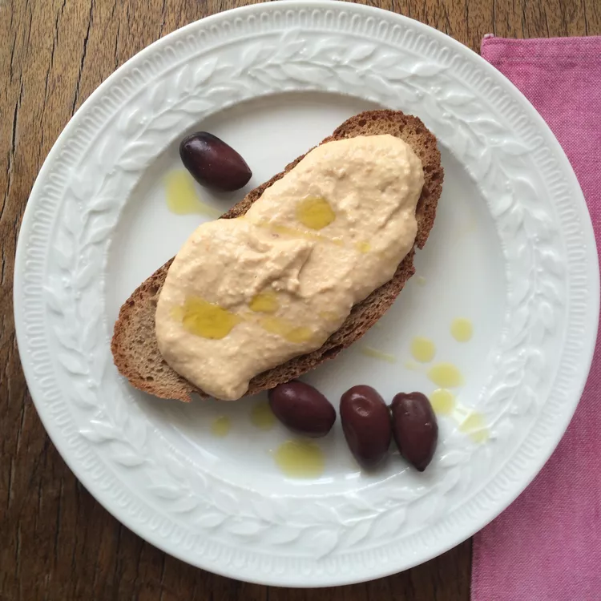

Taramosalata

Description
Taramosalata is a classic Greek appetizer made with fish roe, soaked bread,olive oil, and lemon juice.
Satisfyingly delicious, this wonderful, slightly pink dip
is perfect served on pita bread as part of a meze platter or a tasty
lunch with some olives and a salad on the side.
Ingredients
- 13 ounces bread, crust removed
- cold water to cover
- ½ cup olive oil
- 1 small onion, roughly chopped
- 1 large lemon, juiced
- 1 cup tarama (cured carp, cod, or mullet roe)
Steps
- Place bread in a bowl, cover with water and let sit until the bread is well soaked,
5 to 10 minutes. Drain water from the bowl
and squeeze all of the excess water from the bread.
- Combine bread, olive oil, onion, and lemon juice in a food processor;
process until smooth. Add tarama and process until well combined.